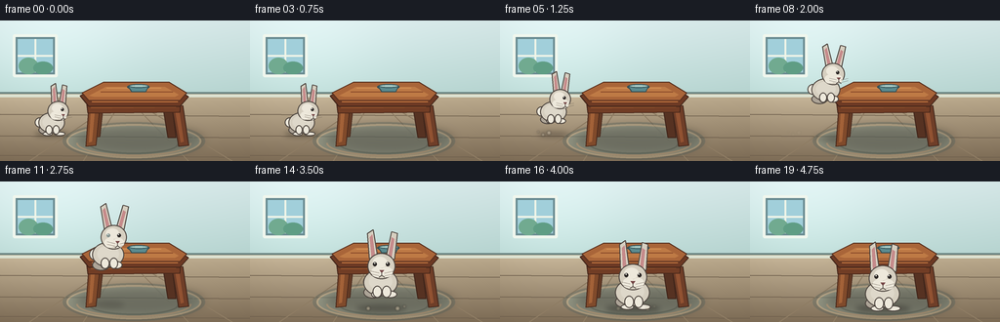
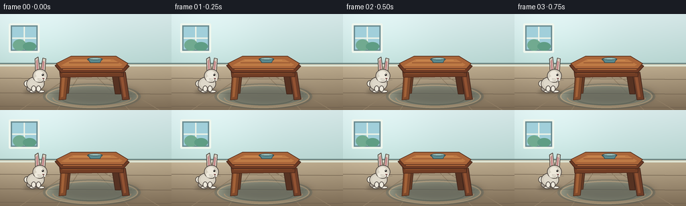

CODING AGENTS AS PIXEL WORLD MODELS
traex/GPT-5.6-Sol · dynamic_spatial_relationship_0020
点击播放 · 原生 RGB 像素
逐轮保存的候选
回放视频、检查图与代码变化。
每份候选均可单独播放。实际图片检查记录在下方工具轨迹中。
候选 01播放与检查图
点击播放 · 原生 RGB 像素


展开代码变化
--- 上一保存版本
+++ 本次保存版本
@@ -0,0 +1,202 @@
+from pathlib import Path
+import math
+import numpy as np
+from PIL import Image, ImageDraw, ImageFilter
+import artifact_io
+
+W,H,N = 256,144,20
+S=4
+
+def sc(v): return int(round(v*S))
+def box(b): return tuple(sc(x) for x in b)
+def pts(p): return [(sc(x),sc(y)) for x,y in p]
+
+def ellipse(d,b,fill,outline=None,width=1): d.ellipse(box(b),fill=fill,outline=outline,width=sc(width) if outline else 1)
+def polygon(d,p,fill,outline=None,width=1): d.polygon(pts(p),fill=fill); outline and d.line(pts(p+[p[0]]),fill=outline,width=sc(width),joint='curve')
+def line(d,p,fill,width=1): d.line(pts(p),fill=fill,width=sc(width),joint='curve')
+
+def background(frame):
+ # Calm storybook room, warm floor and cool wall, with a soft vignette.
+ yy,xx=np.mgrid[0:H*S,0:W*S]
+ horizon=75*S
+ wall=np.zeros((H*S,W*S,3),dtype=np.float32)
+ t=np.clip(yy/horizon,0,1)[...,None]
+ top=np.array([218,236,236]); bot=np.array([185,215,211])
+ wall[:]=top*(1-t)+bot*t
+ floor_t=np.clip((yy-horizon)/(H*S-horizon),0,1)[...,None]
+ floor_top=np.array([191,174,145]); floor_bot=np.array([128,111,89])
+ floor=floor_top*(1-floor_t)+floor_bot*floor_t
+ wall[yy>=horizon]=floor[yy>=horizon]
+ # light from left window, mild vignette
+ glow=np.exp(-(((xx-45*S)/(90*S))**2+((yy-32*S)/(75*S))**2))*15
+ vig=((xx-W*S/2)/(W*S/1.25))**2+((yy-H*S/2)/(H*S/1.0))**2
+ wall += glow[...,None]-9*np.clip(vig,0,1)[...,None]
+ im=Image.fromarray(np.uint8(np.clip(wall,0,255)),'RGB')
+ d=ImageDraw.Draw(im)
+ # wall panels and baseboard
+ d.line([(0,sc(74)),(sc(W),sc(74))],fill=(110,135,132),width=sc(2))
+ d.line([(0,sc(77)),(sc(W),sc(77))],fill=(220,226,209),width=sc(3))
+ # window at left, kept subtle behind the initial rabbit
+ d.rounded_rectangle(box((13,14,59,58)),radius=sc(2),fill=(105,139,145),outline=(239,246,237),width=sc(3))
+ d.rectangle(box((18,19,54,53)),fill=(161,207,218))
+ d.line([ (sc(36),sc(19)),(sc(36),sc(53)) ], fill=(238,244,232),width=sc(2))
+ d.line([ (sc(18),sc(36)),(sc(54),sc(36)) ], fill=(238,244,232),width=sc(2))
+ # vague outdoor shapes
+ d.ellipse(box((19,38,39,55)),fill=(113,170,144)); d.ellipse(box((34,42,54,55)),fill=(95,157,132))
+ # floor boards converge gently
+ for y in (96,118,138): d.line([(0,sc(y)),(sc(W),sc(y+2))],fill=(112,97,78),width=sc(1))
+ for x in (30,85,193,238): d.line([(sc(128),sc(77)),(sc(x),sc(144))],fill=(142,124,99),width=sc(1))
+ return im
+
+def draw_rug(im):
+ layer=Image.new('RGBA',im.size,(0,0,0,0)); d=ImageDraw.Draw(layer)
+ d.ellipse(box((64,104,210,143)),fill=(67,91,91,70))
+ d.ellipse(box((68,106,206,141)),fill=(132,166,159,100),outline=(226,209,170,100),width=sc(2))
+ # curved woven stripes
+ d.arc(box((78,112,196,139)),0,180,fill=(224,197,157,100),width=sc(2))
+ d.arc(box((91,116,183,137)),0,180,fill=(86,116,113,120),width=sc(2))
+ im.alpha_composite(layer) if im.mode=='RGBA' else im.paste(layer,(0,0),layer)
+
+def draw_table(im):
+ # cast shadow, then a fixed solid wooden table in perspective
+ sh=Image.new('RGBA',im.size,(0,0,0,0)); sd=ImageDraw.Draw(sh)
+ sd.ellipse(box((77,108,207,135)),fill=(30,26,24,75)); sh=sh.filter(ImageFilter.GaussianBlur(sc(5)))
+ im.paste(sh,(0,0),sh)
+ d=ImageDraw.Draw(im)
+ # back legs (recede behind apron)
+ polygon(d,[(96,82),(106,82),(102,119),(94,120)],(101,60,38),(75,43,29),1)
+ polygon(d,[(166,83),(175,82),(180,120),(172,120)],(86,50,34),(65,38,27),1)
+ # front legs
+ polygon(d,[(91,88),(102,89),(98,128),(88,129)],(128,74,43),(77,43,29),1)
+ polygon(d,[(176,88),(187,87),(193,128),(183,129)],(111,62,40),(67,39,28),1)
+ # warm highlights on legs
+ polygon(d,[(93,91),(97,92),(94,124),(91,125)],(163,98,56))
+ polygon(d,[(179,91),(183,90),(188,124),(185,125)],(145,82,50))
+ # apron, with front face emphasized
+ polygon(d,[(88,78),(185,77),(184,94),(90,95)],(113,61,37),(70,39,27),1)
+ polygon(d,[(93,82),(181,81),(180,89),(93,90)],(143,81,45))
+ # tabletop, obvious perspective trapezoid
+ polygon(d,[(82,77),(105,65),(173,65),(193,78),(184,88),(91,88)],(109,58,36),(65,37,26),1)
+ polygon(d,[(84,74),(106,63),(173,63),(191,74),(184,82),(91,82)],(169,101,57),(88,48,31),1)
+ polygon(d,[(91,77),(108,68),(169,68),(183,76),(179,78),(96,78)],(190,122,69))
+ # grain and edge shine
+ line(d,[(109,69),(165,69)],(210,143,83),1)
+ line(d,[(103,73),(177,73)],(139,75,43),1)
+ line(d,[(94,83),(182,83)],(205,126,68),1)
+ # small ceramic bowl adds stable detail on top
+ ellipse(d,(130,65,153,71),(74,111,117),(52,76,82),1)
+ polygon(d,[(131,67),(152,67),(149,73),(135,73)],(91,139,143),(55,82,87),1)
+ ellipse(d,(132,65,152,69),(163,198,192),(56,87,92),1)
+
+def bunny_pose(i):
+ # Holds the first pose long enough to establish LEFT; then hops diagonally into foreground.
+ if i<=4:
+ return 53.0,116.0,0.73,0.0,0.0,0.0
+ if i>=15:
+ settle=[0,1.5,0.5,0,0][min(i-15,4)]
+ return 136.0,130.0-settle,0.96,1.0,0.0,0.0
+ p=(i-4)/11.0
+ q=p*p*(3-2*p)
+ x=53+(136-53)*q
+ ground=116+(130-116)*q
+ lift=39*math.sin(math.pi*p)
+ y=ground-lift
+ squash=math.sin(math.pi*p)
+ turn=np.clip((p-.48)/.45,0,1)
+ return x,y,0.73+(0.96-0.73)*q,turn,lift,squash
+
+def draw_bunny(im,i):
+ x,y,s,turn,lift,air=bunny_pose(i)
+ # ground shadow remains on floor and moves toward viewer; narrows when high
+ ground=116 if i<=4 else (130 if i>=15 else 116+14*((i-4)/11.0)**2*(3-2*((i-4)/11.0)))
+ shadow=Image.new('RGBA',im.size,(0,0,0,0)); dd=ImageDraw.Draw(shadow)
+ sw=(24+5*turn)*s*(1-0.35*min(lift/39,1)); alpha=int(92-48*min(lift/39,1))
+ dd.ellipse(box((x-sw,ground-3*s,x+sw,ground+4*s)),fill=(38,32,29,alpha))
+ shadow=shadow.filter(ImageFilter.GaussianBlur(sc(2.5))); im.paste(shadow,(0,0),shadow)
+
+ lay=Image.new('RGBA',im.size,(0,0,0,0)); d=ImageDraw.Draw(lay)
+ # warm gray rabbit, black-brown linework. Side pose gradually rotates to frontal.
+ fur=(214,207,192,255); fur_light=(237,232,219,255); fur_shadow=(173,164,151,255); ink=(77,69,63,255)
+ # hop stretch; body lower anchor is y
+ stretch=1+0.14*air
+ squash=1-0.09*air
+ hx=x+(9*(1-turn))*s
+ head_y=y-(32+6*air)*s
+ body_y=y-(16+2*air)*s
+ # rear tail on left, visible especially at start
+ ellipse(d,(x-(24-5*turn)*s,body_y-7*s,x-(10-4*turn)*s,body_y+7*s),fur_light,ink,1)
+ # far hind leg
+ ellipse(d,(x-19*s,y-12*s,x+2*s,y+1*s),fur_shadow,ink,1)
+ # main body
+ ellipse(d,(x-19*s,body_y-14*s,x+18*s,body_y+15*s),fur,ink,1)
+ ellipse(d,(x-13*s,body_y-10*s,x+12*s,body_y+9*s),(222,216,202,255))
+ # tucked paws in mid-air; spread feet after landing
+ tuck=min(1,lift/18)
+ leftfoot=(x-(13-4*tuck)*s,y-(3+7*tuck)*s,x+(1)*s,y+(3-4*tuck)*s)
+ rightfoot=(x+(3)*s,y-(3+7*tuck)*s,x+(19-3*tuck)*s,y+(3-4*tuck)*s)
+ ellipse(d,leftfoot,fur_light,ink,1); ellipse(d,rightfoot,fur_light,ink,1)
+ # ears behind head: become symmetric in front pose
+ ear_sep=(5+4*turn)*s
+ # ears bend slightly backward while airborne
+ bend=4*air*s
+ leftcx=hx-ear_sep
+ rightcx=hx+ear_sep
+ polygon(d,[(leftcx-4*s,head_y-8*s),(leftcx-5*s-bend,head_y-35*s),(leftcx+1*s-bend,head_y-39*s),(leftcx+5*s,head_y-8*s)],fur,ink,1)
+ polygon(d,[(rightcx-4*s,head_y-8*s),(rightcx+1*s+bend,head_y-37*s),(rightcx+7*s+bend,head_y-35*s),(rightcx+5*s,head_y-7*s)],fur,ink,1)
+ # inner ear
+ polygon(d,[(leftcx-1.8*s,head_y-10*s),(leftcx-2.6*s-bend,head_y-31*s),(leftcx+.2*s-bend,head_y-34*s),(leftcx+2*s,head_y-10*s)],(198,139,139,255))
+ polygon(d,[(rightcx-1.5*s,head_y-10*s),(rightcx+1*s+bend,head_y-31*s),(rightcx+4*s+bend,head_y-29*s),(rightcx+2*s,head_y-9*s)],(198,139,139,255))
+ # head and muzzle
+ ellipse(d,(hx-15*s,head_y-14*s,hx+15*s,head_y+14*s),fur,ink,1)
+ # forehead light
+ ellipse(d,(hx-9*s,head_y-10*s,hx+6*s,head_y+2*s),fur_light)
+ # cheeks grow symmetric as bunny turns toward camera
+ ellipse(d,(hx-11*s,head_y+1*s,hx+2*s,head_y+12*s),fur_light)
+ ellipse(d,(hx-1*s,head_y+1*s,hx+12*s,head_y+12*s),fur_light)
+ # eyes: side eye plus emerging second eye
+ eye_y=head_y-2*s
+ eye_sep=(5.7+turn*1.3)*s
+ ellipse(d,(hx+eye_sep-2.1*s,eye_y-2.2*s,hx+eye_sep+2.1*s,eye_y+2.2*s),(43,39,37,255))
+ ellipse(d,(hx+eye_sep-1.2*s,eye_y-1.6*s,hx+eye_sep-.1*s,eye_y-.5*s),(255,255,246,255))
+ if turn>.15:
+ a=int(255*min(1,(turn-.15)/.45))
+ ellipse(d,(hx-eye_sep-2.1*s,eye_y-2.2*s,hx-eye_sep+2.1*s,eye_y+2.2*s),(43,39,37,a))
+ ellipse(d,(hx-eye_sep-.8*s,eye_y-1.6*s,hx-eye_sep+.3*s,eye_y-.5*s),(255,255,246,a))
+ # nose migrates to center as it turns
+ nosex=hx+(7*(1-turn))*s; nosey=head_y+6*s
+ polygon(d,[(nosex-2.5*s,nosey-1.5*s),(nosex+2.5*s,nosey-1.5*s),(nosex,nosey+1.7*s)],(118,72,72,255))
+ line(d,[(nosex,nosey+1*s),(nosex,nosey+4*s)],ink,0.7)
+ line(d,[(nosex,nosey+4*s),(nosex-3*s,nosey+6*s)],ink,0.7)
+ line(d,[(nosex,nosey+4*s),(nosex+3*s,nosey+6*s)],ink,0.7)
+ # whiskers, more readable at landing
+ for dy in (-1.5,1.5):
+ line(d,[(nosex-3*s,nosey+3*s+dy*s),(nosex-12*s,nosey+1*s+dy*s)],(100,90,81,210),0.55)
+ line(d,[(nosex+3*s,nosey+3*s+dy*s),(nosex+12*s,nosey+1*s+dy*s)],(100,90,81,210),0.55)
+ # forepaws against chest
+ ellipse(d,(x-9*s,body_y+4*s,x+1*s,body_y+17*s),fur_light,ink,1)
+ ellipse(d,(x+1*s,body_y+4*s,x+11*s,body_y+17*s),fur_light,ink,1)
+ im.paste(lay,(0,0),lay)
+
+
+def make_frame(i):
+ im=background(i).convert('RGBA')
+ draw_rug(im)
+ draw_table(im)
+ # Motion is shown by pose and tiny dust only, no arrows or labels.
+ draw_bunny(im,i)
+ # dust puffs right after takeoff and landing
+ dlay=Image.new('RGBA',im.size,(0,0,0,0)); d=ImageDraw.Draw(dlay)
+ if 5<=i<=8:
+ a=max(0,120-(i-5)*35)
+ for k,(dx,dy,r) in enumerate([(-4,0,2),(-10,2,1.5),(-15,-1,1)]):
+ ellipse(d,(54+dx-r,115+dy-r,54+dx+r,115+dy+r),(222,210,186,a))
+ if 14<=i<=17:
+ a=max(0,120-(i-14)*35)
+ for dx,dy,r in [(-15,1,2),(15,1,2.3),(22,-1,1.2)]:
+ ellipse(d,(136+dx-r,129+dy-r,136+dx+r,129+dy+r),(215,199,170,a))
+ dlay=dlay.filter(ImageFilter.GaussianBlur(sc(.7))); im.alpha_composite(dlay)
+ return np.asarray(im.convert('RGB').resize((W,H),Image.Resampling.LANCZOS),dtype=np.uint8)
+
+frames=np.stack([make_frame(i) for i in range(N)],axis=0)
+assert frames.shape==(20,144,256,3) and frames.dtype==np.uint8
+artifact_io.save(frames,Path(__file__).resolve().parent)
可观测工具轨迹
实际执行的命令与返回图片。
命令 1exit 0
/bin/bash -lc "cat prompt.txt && printf '\\n---RULES---\\n' && cat GENERATION_RULES.md && printf '\\n---SPEC---\\n' && cat task_spec.json"
命令 2exit 0
/bin/bash -lc "find . -maxdepth 2 -type f -printf '%p\\n' | sort"
命令 3exit 0
/bin/bash -lc 'cat artifact_io.py'
命令 4exit 0
/bin/bash -lc "cat > generate.py <<'PY'
from pathlib import Path
import math
import numpy as np
from PIL import Image, ImageDraw, ImageFilter
import artifact_io
W,H,N = 256,144,20
S=4
def sc(v): return int(round(v*S))
def box(b): return tuple(sc(x) for x in b)
def pts(p): return [(sc(x),sc(y)) for x,y in p]
def ellipse(d,b,fill,outline=None,width=1): d.ellipse(box(b),fill=fill,outline=outline,width=sc(width) if outline else 1)
def polygon(d,p,fill,outline=None,width=1): d.polygon(pts(p),fill=fill); outline and d.line(pts(p+[p[0]]),fill=outline,width=sc(width),joint='curve')
def line(d,p,fill,width=1): d.line(pts(p),fill=fill,width=sc(width),joint='curve')
def background(frame):
# Calm storybook room, warm floor and cool wall, with a soft vignette.
yy,xx=np.mgrid[0:H*S,0:W*S]
horizon=75*S
wall=np.zeros((H*S,W*S,3),dtype=np.float32)
t=np.clip(yy/horizon,0,1)[...,None]
top=np.array([218,236,236]); bot=np.array([185,215,211])
wall[:]=top*(1-t)+bot*t
floor_t=np.clip((yy-horizon)/(H*S-horizon),0,1)[...,None]
floor_top=np.array([191,174,145]); floor_bot=np.array([128,111,89])
floor=floor_top*(1-floor_t)+floor_bot*floor_t
wall[yy>=horizon]=floor[yy>=horizon]
# light from left window, mild vignette
glow=np.exp(-(((xx-45*S)/(90*S))**2+((yy-32*S)/(75*S))**2))*15
vig=((xx-W*S/2)/(W*S/1.25))**2+((yy-H*S/2)/(H*S/1.0))**2
wall += glow[...,None]-9*np.clip(vig,0,1)[...,None]
im=Image.fromarray(np.uint8(np.clip(wall,0,255)),'RGB')
d=ImageDraw.Draw(im)
# wall panels and baseboard
d.line([(0,sc(74)),(sc(W),sc(74))],fill=(110,135,132),width=sc(2))
d.line([(0,sc(77)),(sc(W),sc(77))],fill=(220,226,209),width=sc(3))
# window at left, kept subtle behind the initial rabbit
d.rounded_rectangle(box((13,14,59,58)),radius=sc(2),fill=(105,139,145),outline=(239,246,237),width=sc(3))
d.rectangle(box((18,19,54,53)),fill=(161,207,218))
d.line([ (sc(36),sc(19)),(sc(36),sc(53)) ], fill=(238,244,232),width=sc(2))
d.line([ (sc(18),sc(36)),(sc(54),sc(36)) ], fill=(238,244,232),width=sc(2))
# vague outdoor shapes
d.ellipse(box((19,38,39,55)),fill=(113,170,144)); d.ellipse(box((34,42,54,55)),fill=(95,157,132))
# floor boards converge gently
for y in (96,118,138): d.line([(0,sc(y)),(sc(W),sc(y+2))],fill=(112,97,78),width=sc(1))
for x in (30,85,193,238): d.line([(sc(128),sc(77)),(sc(x),sc(144))],fill=(142,124,99),width=sc(1))
return im
def draw_rug(im):
layer=Image.new('RGBA',im.size,(0,0,0,0)); d=ImageDraw.Draw(layer)
d.ellipse(box((64,104,210,143)),fill=(67,91,91,70))
d.ellipse(box((68,106,206,141)),fill=(132,166,159,100),outline=(226,209,170,100),width=sc(2))
# curved woven stripes
d.arc(box((78,112,196,139)),0,180,fill=(224,197,157,100),width=sc(2))
d.arc(box((91,116,183,137)),0,180,fill=(86,116,113,120),width=sc(2))
im.alpha_composite(layer) if im.mode=='RGBA' else im.paste(layer,(0,0),layer)
def draw_table(im):
# cast shadow, then a fixed solid wooden table in perspective
sh=Image.new('RGBA',im.size,(0,0,0,0)); sd=ImageDraw.Draw(sh)
sd.ellipse(box((77,108,207,135)),fill=(30,26,24,75)); sh=sh.filter(ImageFilter.GaussianBlur(sc(5)))
im.paste(sh,(0,0),sh)
d=ImageDraw.Draw(im)
# back legs (recede behind apron)
polygon(d,[(96,82),(106,82),(102,119),(94,120)],(101,60,38),(75,43,29),1)
polygon(d,[(166,83),(175,82),(180,120),(172,120)],(86,50,34),(65,38,27),1)
# front legs
polygon(d,[(91,88),(102,89),(98,128),(88,129)],(128,74,43),(77,43,29),1)
polygon(d,[(176,88),(187,87),(193,128),(183,129)],(111,62,40),(67,39,28),1)
# warm highlights on legs
polygon(d,[(93,91),(97,92),(94,124),(91,125)],(163,98,56))
polygon(d,[(179,91),(183,90),(188,124),(185,125)],(145,82,50))
# apron, with front face emphasized
polygon(d,[(88,78),(185,77),(184,94),(90,95)],(113,61,37),(70,39,27),1)
polygon(d,[(93,82),(181,81),(180,89),(93,90)],(143,81,45))
# tabletop, obvious perspective trapezoid
polygon(d,[(82,77),(105,65),(173,65),(193,78),(184,88),(91,88)],(109,58,36),(65,37,26),1)
polygon(d,[(84,74),(106,63),(173,63),(191,74),(184,82),(91,82)],(169,101,57),(88,48,31),1)
polygon(d,[(91,77),(108,68),(169,68),(183,76),(179,78),(96,78)],(190,122,69))
# grain and edge shine
line(d,[(109,69),(165,69)],(210,143,83),1)
line(d,[(103,73),(177,73)],(139,75,43),1)
line(d,[(94,83),(182,83)],(205,126,68),1)
# small ceramic bowl adds stable detail on top
ellipse(d,(130,65,153,71),(74,111,117),(52,76,82),1)
polygon(d,[(131,67),(152,67),(149,73),(135,73)],(91,139,143),(55,82,87),1)
ellipse(d,(132,65,152,69),(163,198,192),(56,87,92),1)
def bunny_pose(i):
# Holds the first pose long enough to establish LEFT; then hops diagonally into foreground.
if i<=4:
return 53.0,116.0,0.73,0.0,0.0,0.0
if i>=15:
settle=[0,1.5,0.5,0,0][min(i-15,4)]
return 136.0,130.0-settle,0.96,1.0,0.0,0.0
p=(i-4)/11.0
q=p*p*(3-2*p)
x=53+(136-53)*q
ground=116+(130-116)*q
lift=39*math.sin(math.pi*p)
y=ground-lift
squash=math.sin(math.pi*p)
turn=np.clip((p-.48)/.45,0,1)
return x,y,0.73+(0.96-0.73)*q,turn,lift,squash
def draw_bunny(im,i):
x,y,s,turn,lift,air=bunny_pose(i)
# ground shadow remains on floor and moves toward viewer; narrows when high
ground=116 if i<=4 else (130 if i>=15 else 116+14*((i-4)/11.0)**2*(3-2*((i-4)/11.0)))
shadow=Image.new('RGBA',im.size,(0,0,0,0)); dd=ImageDraw.Draw(shadow)
sw=(24+5*turn)*s*(1-0.35*min(lift/39,1)); alpha=int(92-48*min(lift/39,1))
dd.ellipse(box((x-sw,ground-3*s,x+sw,ground+4*s)),fill=(38,32,29,alpha))
shadow=shadow.filter(ImageFilter.GaussianBlur(sc(2.5))); im.paste(shadow,(0,0),shadow)
lay=Image.new('RGBA',im.size,(0,0,0,0)); d=ImageDraw.Draw(lay)
# warm gray rabbit, black-brown linework. Side pose gradually rotates to frontal.
fur=(214,207,192,255); fur_light=(237,232,219,255); fur_shadow=(173,164,151,255); ink=(77,69,63,255)
# hop stretch; body lower anchor is y
stretch=1+0.14*air
squash=1-0.09*air
hx=x+(9*(1-turn))*s
head_y=y-(32+6*air)*s
body_y=y-(16+2*air)*s
# rear tail on left, visible especially at start
ellipse(d,(x-(24-5*turn)*s,body_y-7*s,x-(10-4*turn)*s,body_y+7*s),fur_light,ink,1)
# far hind leg
ellipse(d,(x-19*s,y-12*s,x+2*s,y+1*s),fur_shadow,ink,1)
# main body
ellipse(d,(x-19*s,body_y-14*s,x+18*s,body_y+15*s),fur,ink,1)
ellipse(d,(x-13*s,body_y-10*s,x+12*s,body_y+9*s),(222,216,202,255))
# tucked paws in mid-air; spread feet after landing
tuck=min(1,lift/18)
leftfoot=(x-(13-4*tuck)*s,y-(3+7*tuck)*s,x+(1)*s,y+(3-4*tuck)*s)
rightfoot=(x+(3)*s,y-(3+7*tuck)*s,x+(19-3*tuck)*s,y+(3-4*tuck)*s)
ellipse(d,leftfoot,fur_light,ink,1); ellipse(d,rightfoot,fur_light,ink,1)
# ears behind head: become symmetric in front pose
ear_sep=(5+4*turn)*s
# ears bend slightly backward while airborne
bend=4*air*s
leftcx=hx-ear_sep
rightcx=hx+ear_sep
polygon(d,[(leftcx-4*s,head_y-8*s),(leftcx-5*s-bend,head_y-35*s),(leftcx+1*s-bend,head_y-39*s),(leftcx+5*s,head_y-8*s)],fur,ink,1)
polygon(d,[(rightcx-4*s,head_y-8*s),(rightcx+1*s+bend,head_y-37*s),(rightcx+7*s+bend,head_y-35*s),(rightcx+5*s,head_y-7*s)],fur,ink,1)
# inner ear
polygon(d,[(leftcx-1.8*s,head_y-10*s),(leftcx-2.6*s-bend,head_y-31*s),(leftcx+.2*s-bend,head_y-34*s),(leftcx+2*s,head_y-10*s)],(198,139,139,255))
polygon(d,[(rightcx-1.5*s,head_y-10*s),(rightcx+1*s+bend,head_y-31*s),(rightcx+4*s+bend,head_y-29*s),(rightcx+2*s,head_y-9*s)],(198,139,139,255))
# head and muzzle
ellipse(d,(hx-15*s,head_y-14*s,hx+15*s,head_y+14*s),fur,ink,1)
# forehead light
ellipse(d,(hx-9*s,head_y-10*s,hx+6*s,head_y+2*s),fur_light)
# cheeks grow symmetric as bunny turns toward camera
ellipse(d,(hx-11*s,head_y+1*s,hx+2*s,head_y+12*s),fur_light)
ellipse(d,(hx-1*s,head_y+1*s,hx+12*s,head_y+12*s),fur_light)
# eyes: side eye plus emerging second eye
eye_y=head_y-2*s
eye_sep=(5.7+turn*1.3)*s
ellipse(d,(hx+eye_sep-2.1*s,eye_y-2.2*s,hx+eye_sep+2.1*s,eye_y+2.2*s),(43,39,37,255))
ellipse(d,(hx+eye_sep-1.2*s,eye_y-1.6*s,hx+eye_sep-.1*s,eye_y-.5*s),(255,255,246,255))
if turn>.15:
a=int(255*min(1,(turn-.15)/.45))
ellipse(d,(hx-eye_sep-2.1*s,eye_y-2.2*s,hx-eye_sep+2.1*s,eye_y+2.2*s),(43,39,37,a))
ellipse(d,(hx-eye_sep-.8*s,eye_y-1.6*s,hx-eye_sep+.3*s,eye_y-.5*s),(255,255,246,a))
# nose migrates to center as it turns
nosex=hx+(7*(1-turn))*s; nosey=head_y+6*s
polygon(d,[(nosex-2.5*s,nosey-1.5*s),(nosex+2.5*s,nosey-1.5*s),(nosex,nosey+1.7*s)],(118,72,72,255))
line(d,[(nosex,nosey+1*s),(nosex,nosey+4*s)],ink,0.7)
line(d,[(nosex,nosey+4*s),(nosex-3*s,nosey+6*s)],ink,0.7)
line(d,[(nosex,nosey+4*s),(nosex+3*s,nosey+6*s)],ink,0.7)
# whiskers, more readable at landing
for dy in (-1.5,1.5):
line(d,[(nosex-3*s,nosey+3*s+dy*s),(nosex-12*s,nosey+1*s+dy*s)],(100,90,81,210),0.55)
line(d,[(nosex+3*s,nosey+3*s+dy*s),(nosex+12*s,nosey+1*s+dy*s)],(100,90,81,210),0.55)
# forepaws against chest
ellipse(d,(x-9*s,body_y+4*s,x+1*s,body_y+17*s),fur_light,ink,1)
ellipse(d,(x+1*s,body_y+4*s,x+11*s,body_y+17*s),fur_light,ink,1)
im.paste(lay,(0,0),lay)
def make_frame(i):
im=background(i).convert('RGBA')
draw_rug(im)
draw_table(im)
# Motion is shown by pose and tiny dust only, no arrows or labels.
draw_bunny(im,i)
# dust puffs right after takeoff and landing
dlay=Image.new('RGBA',im.size,(0,0,0,0)); d=ImageDraw.Draw(dlay)
if 5<=i<=8:
a=max(0,120-(i-5)*35)
for k,(dx,dy,r) in enumerate([(-4,0,2),(-10,2,1.5),(-15,-1,1)]):
ellipse(d,(54+dx-r,115+dy-r,54+dx+r,115+dy+r),(222,210,186,a))
if 14<=i<=17:
a=max(0,120-(i-14)*35)
for dx,dy,r in [(-15,1,2),(15,1,2.3),(22,-1,1.2)]:
ellipse(d,(136+dx-r,129+dy-r,136+dx+r,129+dy+r),(215,199,170,a))
dlay=dlay.filter(ImageFilter.GaussianBlur(sc(.7))); im.alpha_composite(dlay)
return np.asarray(im.convert('RGB').resize((W,H),Image.Resampling.LANCZOS),dtype=np.uint8)
frames=np.stack([make_frame(i) for i in range(N)],axis=0)
assert frames.shape==(20,144,256,3) and frames.dtype==np.uint8
artifact_io.save(frames,Path(__file__).resolve().parent)
PY
python generate.py"命令 5exit 0
/bin/bash -lc "python - <<'PY'
import numpy as np
x=np.load('pixels.npz')['pixels']
print(x.shape, x.dtype, 'frames', len(list(__import__('pathlib').Path('frames').glob('*.png'))))
PY"命令 6exit 0
/bin/bash -lc 'ls -lh generate.py pixels.npz index.html inspection.png frames/00.png frames/19.png'
视觉工具实际返回图片 1

保存候选 1 份；完成命令 6 次；可验证图片返回 1 张。原始 API 响应与完整日志保留在本地。